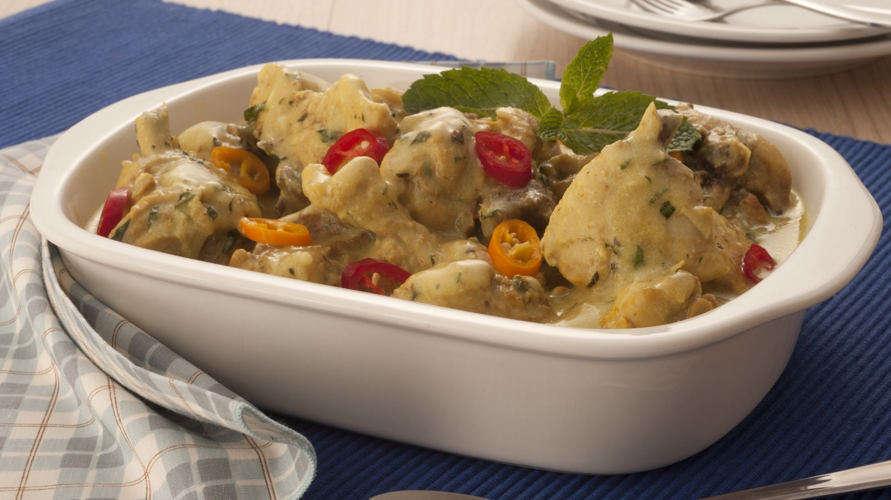

Aves · Frango
Frango com iogurte e hortelã

Ingredientes
- 8 pedaços de frango (1 kg)
- 2 colheres (sopa) de manteiga ou margarina
- 2 colheres (sopa) de óleo
- Sal e pimenta-do-reino a gosto
- ½ xícara (chá) de vinho branco seco
- ¾ de xícara (chá) de água
- 1 copinho de iogurte natural (200 g)
- 1 colher (sopa) de hortelã picada
Modo de preparo
- Lave e seque bem os pedaços de frango. Numa panela grande, aqueça a manteiga ou margarina e o óleo.
- Junte o frango e doure de todos os lados. Polvilhe levemente com sal e pimenta-do-reino.
- Acrescente o vinho, tampe bem e cozinhe em fogo baixo por cerca de 30 minutos. Durante o cozimento, vá juntando a água para não cozinhar só na gordura.
- Retire o frango. Tire parte da gordura do molho restante (se preferir, passe o molho para uma vasilha pequena, deixe esfriar e retire a gordura que sobe).
- Junte o iogurte e a hortelã ao molho, misturando bem. Despeje sobre o frango na travessa e sirva.
Observação: dica do cartão — esfriar o molho facilita retirar a gordura.